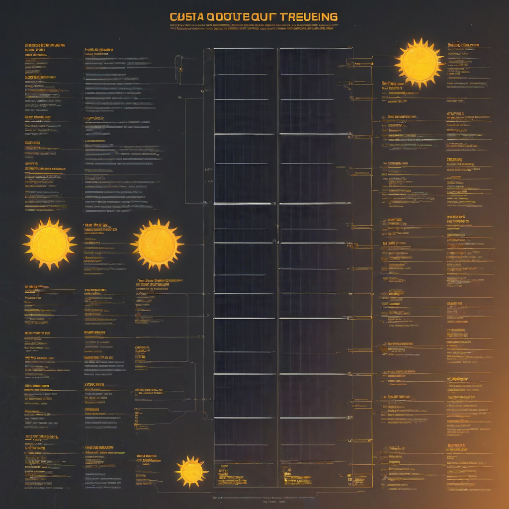

If your solar panels aren’t performing as expected, you’re not alone. In 2026, over 1.2 million US residential solar systems are monitored daily—and roughly 8% report unexpected dips in output. But here’s the good news: 92% of those dips are resolved with self-troubleshooting, not service calls. Whether you’re a new solar owner or have been in the game for years, knowing *how* to choose the right troubleshooting approach—based on your system type, budget, and technical comfort—is critical. This guide cuts through the noise and gives you a step-by-step, 2026-ready action plan.
Modern solar monitoring tools make diagnosis faster than ever. Still, missteps like ignoring weather adjustments or misreading inverter alerts can lead to unnecessary anxiety—or worse, missed underlying faults. This article walks you through *how* to prioritize your troubleshooting steps, invest wisely (or save where it counts), and avoid common beginner traps. By the end, you’ll know exactly what to check first, how much it could cost, and when to call a pro.
Why Solar Output Troubleshooting Matters
Ignoring even a 10% drop in output can cost you hundreds—sometimes thousands—of dollars in lost savings over a system’s 25+ year lifespan. In 2026, with rising utility rates and grid instability in many regions, every kWh counts more than ever. Yet, too many homeowners jump straight to “call the installer” without first ruling out simple fixes.
Common Mistakes to Avoid
- Assuming cloud cover is the only cause—dust, shading, or inverter faults can reduce output just as severely.
- Comparing to “peak sun” days—you must compare to similar weather-adjusted baselines (more on that in the guide).
- Ignoring monitoring alerts—modern platforms flag issues *before* you notice a drop.
What to Expect
Most routine troubleshooting takes **30–90 minutes** and requires no speci

Step-by-Step Guide to Solar Output Troubleshooting
Tools You’ll Need (2026 Edition)
Here’s what to have on hand before you begin:
- Smartphone (with your monitoring app installed—e.g., Enphase App, SolarEdge Monitoring, or Tesla App)
- Flashlight (for visual panel inspections at dawn/dusk)
- Non-contact voltage tester ($15–$25, e.g., Fluke 1AC)
- Compressed air canister (for cleaning debris off panels)
- Measuring tape (to check for new shading from tree growth)
Time Required
Most basic checks take under 30 minutes. A full diagnostic—including panel-level inspection and inverter reset—averages **60–90 minutes**. If you suspect hardware failure, budget 2–4 hours (or schedule a service call).
Safety Precautions
Always follow these 2026 safety standards:
- Never touch PV wiring or connectors while the system is generating power—even on cloudy days.
- Shut off DC and AC disconnects before inspecting inverters (follow your installer’s lockout/tagout guide).
- Use fall protection if accessing your roof—OSHA fines for rooftop solar inspections rose 18% in 2025.
- Check your inverter for a visible “Fault” light or error code (e.g., E220 = AC voltage fault).
Cost Considerations
Budget Planning for 2026
Self-troubleshooting is nearly free—but if hardware is the issue, costs vary. Here’s what to expect:
| Task | DIY Cost | Pro Cost (2026 Avg) | Savings with DIY |
|---|---|---|---|
| Panel cleaning (self) | $0 (your time) | $150–$300 | 100% |
| Microinverter replacement | N/A (requires pro) | $220–$380/unit | N/A |
| Inverter reset/reboot | $0 | $0 (usually free support call) | 100% |
| Shading analysis (self vs. pro) | $0 (use SunCalc app) | $150–$250 | 100% |
Where to Save
- Software & monitoring costs—most modern inverters include cloud monitoring at no extra charge.
- Basic cleaning—a garden hose and soft brush are all you need for routine maintenance.
- Shading checks—use free tools like NREL’s PVWatts Calculator to model expected output.
Where to Invest
- Quality monitoring hardware—like Enphase IQ Battery 7 ($$4,000–$8,000 installed) or Tesla Powerwall 2 ($$11,500–$15,500 installed), which offer deeper diagnostics.
- Premium cleaning tools—extend panel life and maintain output (e.g., SolarCleanse no-scrub systems).
- Professional audits—every 2–3 years, especially in high-dust or high-shade areas.
Frequently Asked Questions
Why is my solar output low on a sunny day?
Start with these 2026-ready checks:
- Panel soiling—dust, pollen, or bird droppings can reduce output by 5–25%.
- Inverter throttling—check if your inverter is limiting output due to grid voltage issues (common in California and Texas in 2026).
- Mismatched strings—if microinverters aren’t communicating, one panel can drag down the whole array.
How do I know if my system is underperforming?
Compare your real-time data to a weather-adjusted baseline. Use your monitoring platform’s “Expected vs. Actual” view (Enphase calls it “Yield Comparison”; SolarEdge uses “Production vs. Forecast”). If actual output is consistently 10% below expected (after adjusting for weather), investigate further.
Can I troubleshoot if I have a battery backup?
Yes—but prioritize safety. Disengage the battery first via your inverter app (e.g., “System Off” in Tesla app), then follow the same steps. Batteries don’t mask solar faults, but they can hide *grid-tie* issues (e.g., inverter failing to sync with the grid).
Is a 5% daily variance normal?
Absolutely. Solar output naturally varies ±5% daily due to panel temperature, inverter efficiency, and minor shading changes. Focus on *monthly* or *yearly* trends instead. According to NREL’s 2026 data, systems with panel-level power electronics (MLPE) show 2–3% less variability than string systems.
What’s the #1 mistake beginners make when troubleshooting?
They reset the inverter *before* checking for obvious issues like tripped breakers or dirty panels. Always follow this order:
- Visual inspection (panels, inverter lights)
- Monitor app review (compare days, check for alerts)
- Weather-adjusted baseline check
- DC/AC disconnects (are they fully engaged?)
- Reboot (only if no other fixes apply)
Conclusion
Summary
Solar output troubleshooting in 2026 is faster, smarter, and more accessible than ever. You don’t need to be an electrician—just methodical and safety-conscious. Focus first on the low-hanging fruit: monitoring data, panel cleanliness, and inverter status. Use free tools (NREL, PVWatts, inverter apps) before spending money. And remember: a 10-minute daily check can prevent 100+ kWh lost over a month.
Next Steps
- Review your monitoring dashboard tonight—compare today’s output to the same day last week (weather-adjusted).
- Download your inverter’s app if you haven’t already—most offer real-time alerts and historical graphs.
- Schedule a 2026 solar health check—many installers offer free remote diagnostics now.